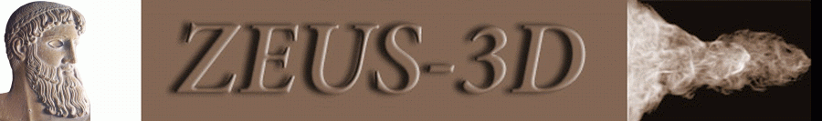
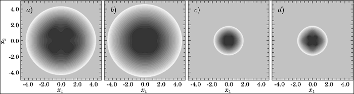
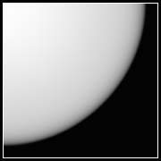

 |
3-D test problem 1: Sedov blast wave |
The Sedov blast wave (Sedov, L. I., 1959, Similarity and dimensional methods in mechanics, New York:Academic Press) is a spherically-symmetric problem ZEUS-3D can do in 1-D spherical polar coordinates, or in 3-D Cartesian coordinates. It tests both isotropy and energy conservation of the code. The blast wave is set up by adding energy to a small sphere at the origin of an otherwise quiescent, uniform medium. The test presented here is without magnetic fields so that it may examine the isotropy of the code in Cartesian coordinates. An MHD blast wave is included in the 2-D gallery. |
|
|||||||||
 |
Images above show a density slice through the blast front using a) the internal energy equation with qcon = 2 at t = 0.1; b) the total energy equation with qcon = 0 at t = 0.1, c) the total energy equation with qcon = 0 at t = 0.01, and d) the total energy equation with qcon = 2 at t = 0.01. This series shows that the aspherical contours, particularly near the centre, are a residual of the quadratic artificial viscosity (controlled by the ZEUS-3D parameter qcon) designed to stabilise shocks. In particular, the asymmetry has nothing to do with whether energy is conserved, since energy is conserved to machine accuracy in panels c and d regardless of qcon. The much smaller asymmetries in panels b and c result from the anisotropic grid viscous effects tripped when the initial overpressured region is resolved with 3.5 zones along the axes, but only 2 zones diagonal to them. Despite its intended purpose, quadratic viscosity is not actually needed here to stabilise the shock. Because the time step is governed by the enormous temperature at the core, the shock takes many time steps to cross each zone, and grid dissipation is sufficient to stabilise it. Further, the total energy equation solution is virtually independent of qcon, and one can safely use qcon = 0. On the other hand, the internal energy equation solution is quite sensitive to qcon (rsph, rmax, pmax, but not shock stability), with qcon = 2 (the default) being optimal. The toll, however, is the loss of isotropy. ZEUS-3D uses the diagonal form of the artificial viscosity (von Neumann & Richtmyer, 1950, J. Appl. Phys., 21, 232), and this is known to behave anisotropically, particularly for problems such as this. A full tensor treatment of the artificial viscosity (e.g., Richtmyer & Morton, 1967, Difference methods for initial value problems, New York:Wiley), if installed, would improve the isotropy of the Cartesian solution. |
 |
|||
|
|||
| Conclusions: With an initial pressure jump of twelve orders of magnitude and the absence of perturbations to break the octal symmetry, this must be regarded as a severe test which, by itself, cannot rule out the use of the internal energy equation for all applications. The advantage of the internal energy equation and why it remains an option in dzeus35 is it guarantees a positive-definite pressure so long as the CFL condition is obeyed. In many applications, pressure jumps are rarely over a few orders of magnitude in which case the internal energy equation can normally conserve total energy to within a percent. While the code is designed to deal with negative pressures that arise when the total energy equation is used (as it turns out, the Sedov problem generated none), the need for positive-definite pressures may still trump the need for strict conservation of mechanical energy, and the internal energy equation remains in the code as a viable alternative. |